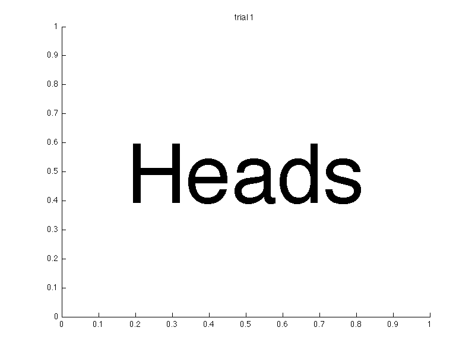
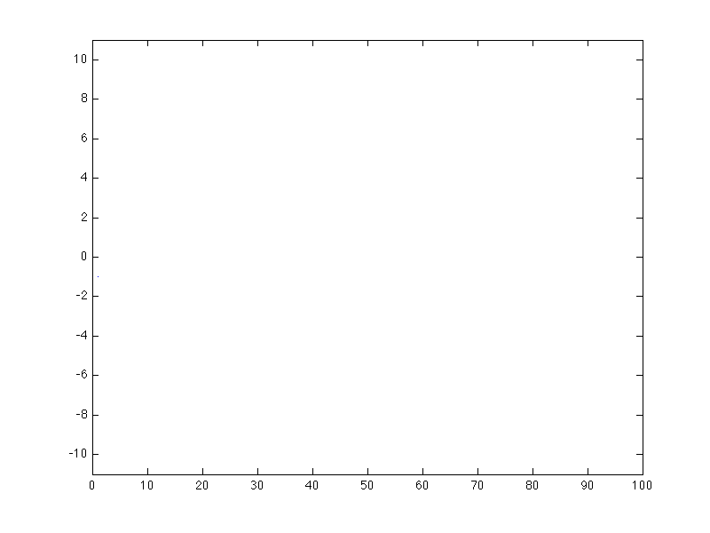
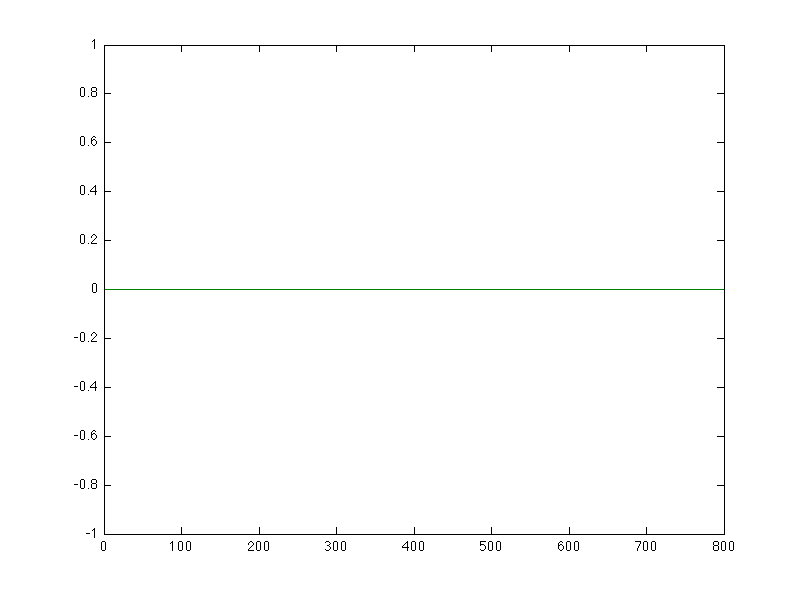

Random is part of our everyday language. We say something is random when it is unpredictable, unexpected, or out of the ordinary. Mathematics provides a framework for understanding some of these unpredictable events called probability theory.
Dice, cards, coin flips, spinners are common examples of randomizing tools we use in board games and gambling. We use them because they are unpredictable. A fair, six-sided dice will generate a number from one to six with an equal probability of each number. Similarly, we consider coin flip to be fair if there is an equal probability of arriving at heads or tails.
This sequence was generated by a simulated fair coin using Matlab. I use the rand() method to generate coin flips of any probability for heads in coin_flip.m
EDU>> coin_flip
enter p, the probability of heads (-1 to exit): 0.5
enter t, the total number of trials: 16
Note that even though there are some long sequences of tails in the text example, each coin flip is independent from all other coin flips. There may be short sequences that may not match expectations, but in the long run there will be half heads and half tails. This chart shows the proportion of heads over a sequence of 800 fair coin flips.

This is actually a way of defining the probability of an event for a given system. An event E is said have a probability P[E] = p if it appears with proportion p in as the sequence generated by the system grows to infinite length.
Flip a coin. If it is heads, I pay you $1. If it is tails you pay me $1. What does your bank account look like with such a game?
The path your bank account takes follows a random walk.
EDU>> random_walk_automatic
enter p, the probability of heads (-1 to exit): 0.5
enter t, the total number of trials: 100Looking at this example of 100 coin flips, it is hard to say much. It seems intuitive that since you and I have the same chance of winning with each step, in the long run it should be effectively even. This brings us to the idea of expected value.
Since we have assigned values to different events, $1 for heads and $-1 for tails, we can ask "What is average value?" That is, if we repeated this game for a long time, what would be the average change of money be per game? For any finite number of coin flips, this average is called the sample average.
There is a theorem called the law of large numbers. The gist of it is that as the number of flips increases, the sample average will get closer and closer to something called the expected value. For a coin flip, we calculate the expected value by (1)(p) + (-1)(1-p).
To calculate expected value for discrete events, like dice rolls and coin flips, we multiply the value by the probability and add up all possibilities.
![\sum_S v_s P[S]](law-of-large-numbers-discrete.png)
So, for our example, we have (1)(.5) + (-1)(.5), which equals 0. That means, if we do a long enough experiment, the average value each coin flip should be about 0.
EDU>> large_numbers
enter p, the probability of heads (-1 to exit): 0.5
enter t, the total number of trials: 800
enter the value associated with heads: 1
enter the value associated with tails: -1You can experiment with different probabilies, numbers of trials, and values with large_numbers.m. For example, we can measure probabilies using the law of large numbers with what is called a flag function. Set the value to 1 for the event you want to measure, e.g. heads and set the value to 0 for all other events.
EDU>> large_numbers
enter p, the probability of heads (-1 to exit): 0.5
enter t, the total number of trials: 800
enter the value associated with heads: 1
enter the value associated with tails: 0